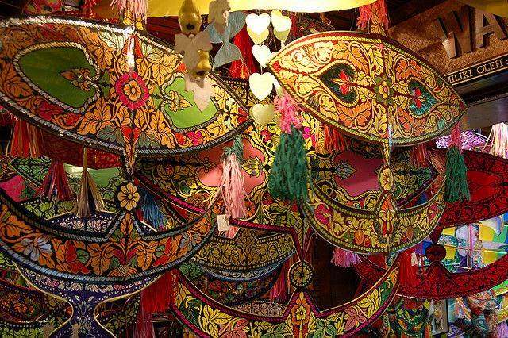

Sejarah
Ikuti garis waktu dari Melaka sebagai pusat perdagangan, kemerdekaan 1957, hingga pembentukan Malaysia pada 1963.
Dari jejak Kesultanan Melaka hingga sajian nasi lemak, temukan cerita tentang sejarah, bahasa, seni, busana, arsitektur, dan kuliner dalam pengalaman web yang interaktif.
Malaysia tumbuh melalui perjumpaan berbagai komunitas. Website ini menampilkan beberapa pintu masuk untuk memahami keragaman tersebut secara ringkas dan menarik.
Ikuti garis waktu dari Melaka sebagai pusat perdagangan, kemerdekaan 1957, hingga pembentukan Malaysia pada 1963.
Kenali Mak Yong, Dondang Sayang, kompang, songket, baju kurung, dan rumah tradisional Melayu.
Jelajahi nasi lemak, roti canai, satay, laksa, dan teh tarik melalui kartu menu yang dapat difilter.
Pelajari frasa sederhana untuk sapaan, perjalanan, dan memesan makanan, lengkap dengan fitur pelafalan browser.
Gunakan kategori untuk menyaring ilustrasi budaya dan buka setiap karya melalui tampilan modal.
Uji pengetahuan lewat kuis, berikan voting kategori favorit, dan coba validasi form tanggapan.

Setiap halaman dirancang dengan hierarki visual yang jelas, gambar vektor lokal, teks singkat, dan interaksi yang relevan dengan tema budaya.
Klik tombol untuk menampilkan fakta budaya Malaysia.
Skor dan pesan hasil akan berubah sesuai jawabanmu. Fitur ini menggunakan fungsi, event, kondisi, dan perulangan JavaScript.